Slide 1 / 16
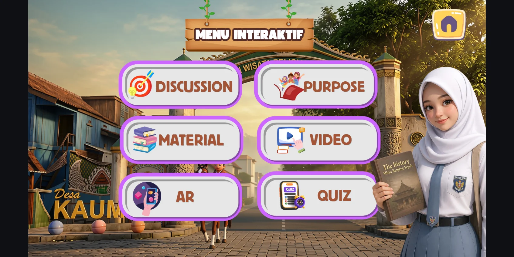
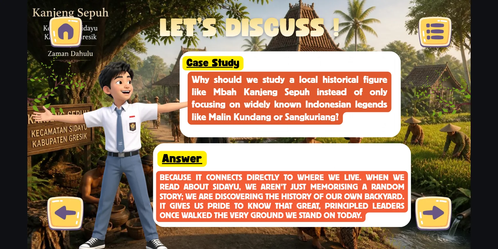
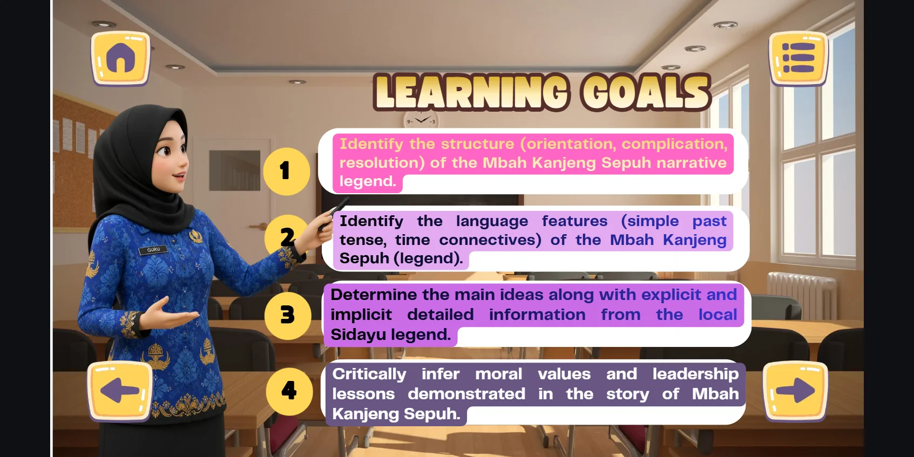
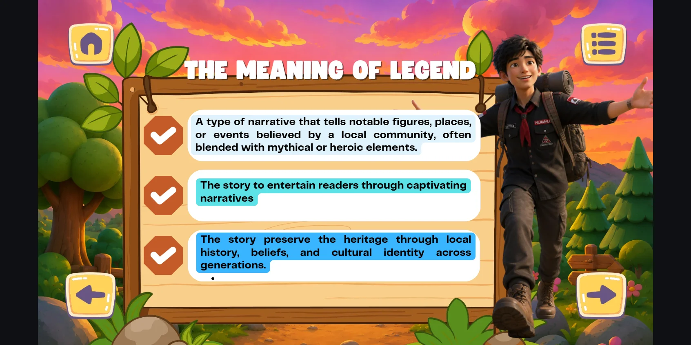
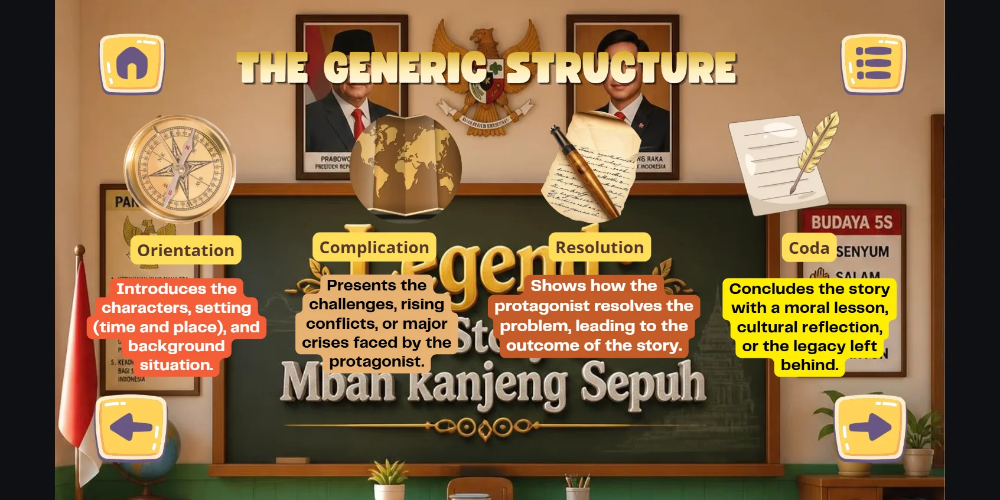
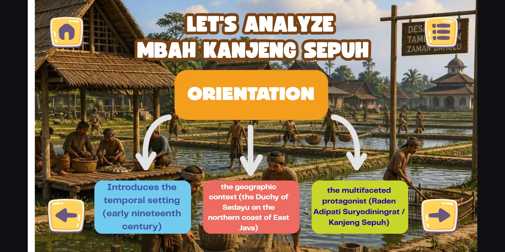
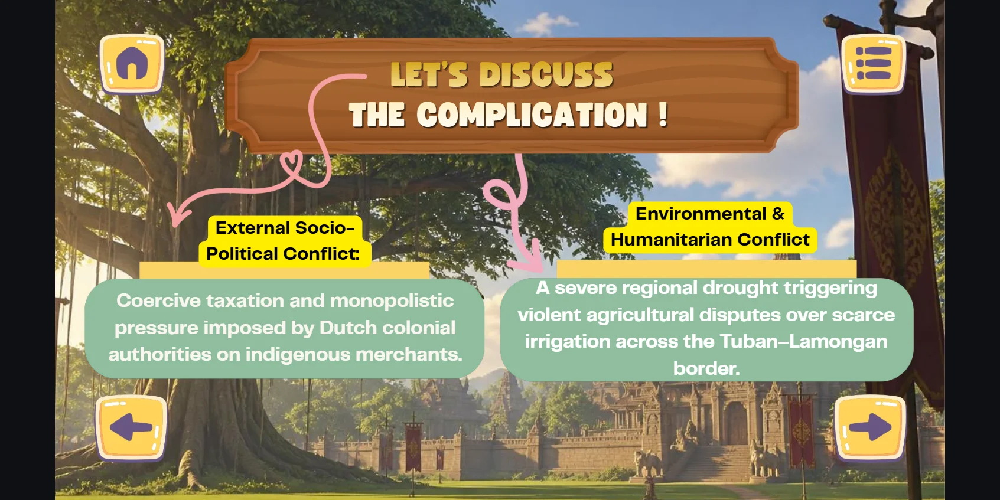
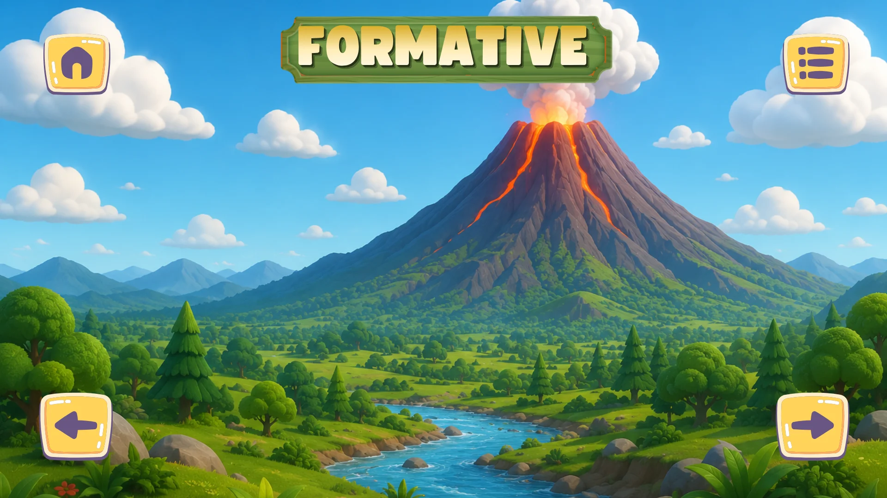
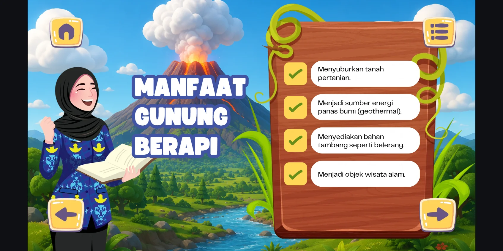
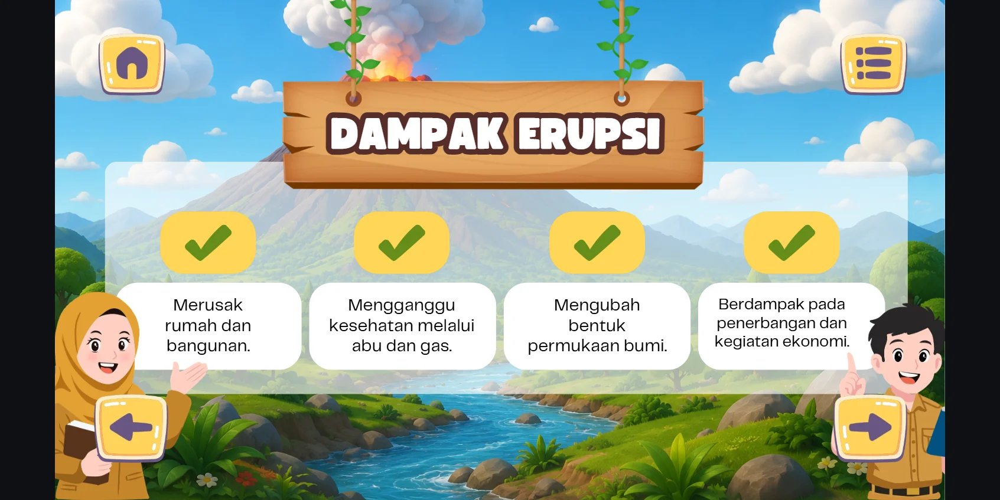
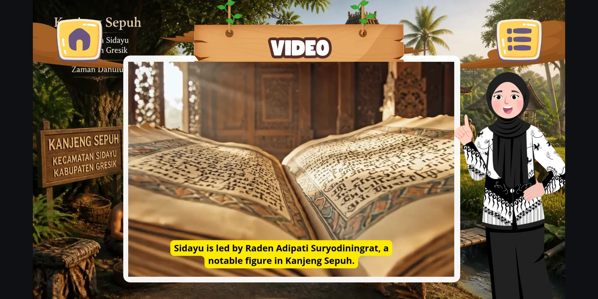
🎬
Kisah Raden Adipati Suryodiningrat
"Sidayu is led by Raden Adipati Suryodiningrat, a notable and wise leader in Kanjeng Sepuh."
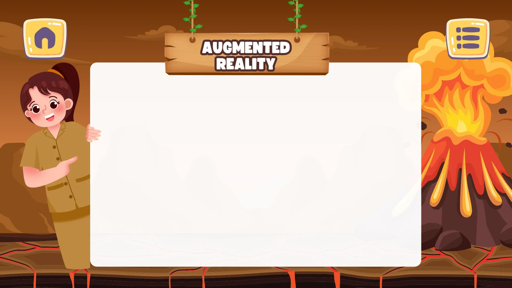
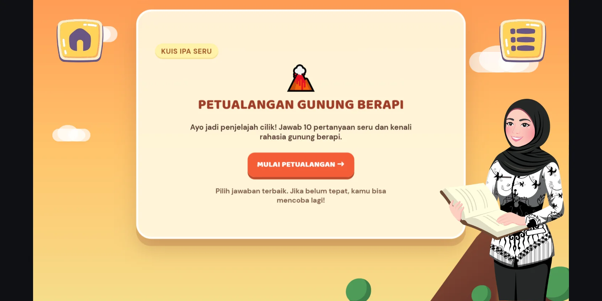
Soal 1 / 10
Skor: 0
Pertanyaan akan dimuat di sini...
🏆
Luar Biasa, Penjelajah!
Kamu telah menyelesaikan Kuis Petualangan Gunung Berapi
100 / 100
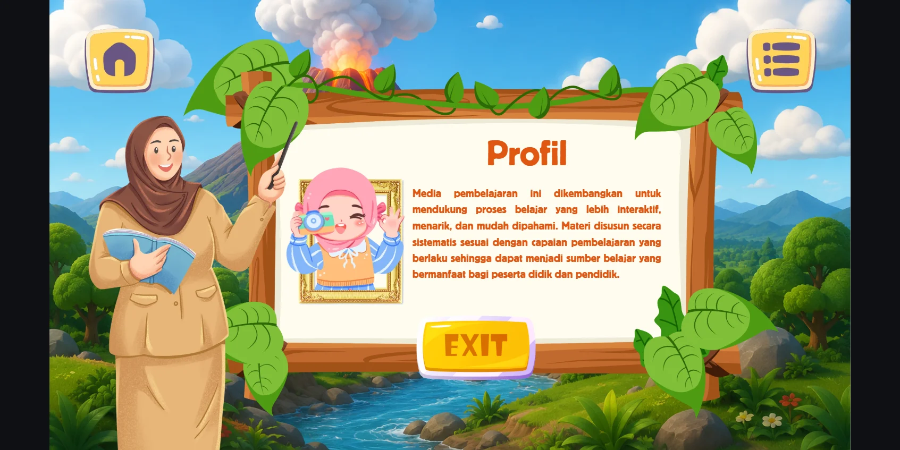
Judul Info
Tahap
Deskripsi detail.
Contoh
Pemberitahuan